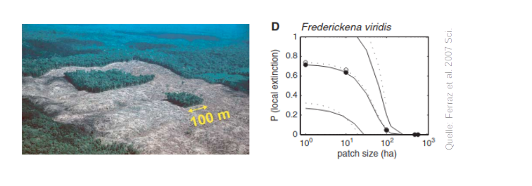
Einführung
Erfassung und Monitoring von Wildtieren (SoSe 2026)
Johannes Signer ![]()
Georg-August Universität Göttingen, Abteilung Wildtierwissenschaften
April 7, 2026
Organisatorisches
Team
- Johannes Signer (Wissenschaftlicher Mitarbeiter in der Abteilung Wildtierwissenschaften)
- Forschungsinteressen: Bewegungsökologie, statistische Methoden in der Ökologie
- Werdegang: Ökologie (BSc), Geoinformatik (MSc), angewandte Statistik (MSc) und Forstwissenschaften (PhD)
Kontakt
- Email:jsigner@uni-goettingen.de
- Verwenden Sie auch das Forum bei StudIP, dort beantworten wir am liebsten Ihre Fragen.
Wer sind Sie?
Ablauf
- 12 Termine (10 davon in präsenz)
- Präsentztermine Mo: von 9:15 bis ca. 11:45 (Vorlesung und Übung)
- Für die Übungen brauchen Sie meist einen Laptop. Sollten Sie kein Laptop zur Verfügung haben, melden Sie sich bitte bei mir.
Bewertung
- Prüfungsvorlesitung: ein 60-Minütiger Multiple-Choice Test zu den wichtigsten Konzepten der Vorlesung.
- Eine Hausarbeit (siehe Website zu Details)
Bei der Prüfung wird nicht nach Programmierkenntnissen in R gefragt, sondern nur nach der Interpretation von Ergebnissen.
Ausblick
- Artporträts: Wie funktioniert Monitoring bei einzelnen Arten
- Themen für die Hausarbeit: Zu wissenschaftlichen Arbeiten und Datenanalyse
Rahmenbedingungen und Erfassung von Wildtieren (E1 & E2)
- Wie kann man Wildtiere überhaupt erfassen?
- Aktive vs. passive Erfassung.
- Für welche Methoden braucht man welche Daten?
Verbreitung von Arten (E3 - E6)
- Die meisten Methoden erfordern eine statistische Grundausbildung.
- Regressionen sind sehr oft das Mittel der Wahl, deshalb müssen wir einige Grundlagen wiederholen bzw. anlegen.
- Keine Angst, dies ist kein Statistikkurs, sondern Statistik ist ein Hilfsmittel.
- Welche Gebiete bewohnt eine Art? Welche Kovariaten können das Vorkommen einer Art beschreiben?
- Entkoppeln des Beobachtungsprozesses vom biologischen Prozess.
Was hat Programmierung in einem Wildbio Kurs verloren?
Immer mehr Daten:
- Ein Fotofallenmonitoring mit 50 Fotofallen, die acht Wochen im Feld sind (mit 30 Fotos pro Kamera und Tag) = 8.4^{4} Fotos.
- Ein durchschnittliches Telemetrieprojekt mit 20 Tieren, 1 Lokalisierung pro Stunde und Tier für ein Jahr = 1.728^{5} Datenpunkte.
- ATLAS-Telemetriesystem: 30 Vögel für 50 Tage mit einer Lokalisierung pro 8 Sekunden: 1.62^{7} Datenpunkte.
Abundanz von Wildtieren (E7 & E8)
- Schätzen von Populationsgrößen, wenn Individuen nicht eindeutig zugeordnet werden können.
- Schätzen von Populationsgrößen, wenn Individuen eindeutig zugeordnet werden können.
- Berücksichtigung der Raumnutzung.
Arbeiten mit Telemetriedaten (E9 -E12)
- Woher stammen sie und was kann damit gemacht werden.
- Finden von Migrationsmuster.
Streifgebiete
- Wo halten sich Tiere auf und wie ändern sich Raumansprüche über die Zeit?
- Haben männliche und weibliche Tiere unterschiedliche Raumansprüche?
Habitatselektion
- Gibt es Präferenzen für bestimmte Habitate?
- Wie kann die Verfügbarkeit von Habitaten quantifiziert werden?
Ablauf: Vorlesung
- 13.04.2026: E01: Einführung
- 20.04.2026: E02: Erfassung von Wildtieren
- 27.04.2026: E03: Verbreitung 1
- 05.05.2026: E04: Verbreitung 2
- 11.05.2026: E05: Occupancy-Modelle 1 (online)
- 18.05.2026: E06: Occupancy-Modelle 2
- 25.06.2026: Keine Vorlesung (Pfingsten/Exkursionswoche)
- 01.06.2026: E07: Abundanz 1
- 08.06.2026: E08: Abundanz 2
- 15.06.2026: E09: Telemetrie 1: Random Walks etc.
- 22.06.2026: E10: Telemetrie 2: Streifgebiete
- 29.06.2026: E11: Telemetrie 3: Habitatselektion (online)
- 06.07.2026: E12: Telemetrie 4: Habitatselektion
- 13.07.2026: Test
- 31.08.2026: Abgabe der Hausarbeit
Ablauf: Vor- und Nachbereitung
- Oft gibt es eine Podcast-Episode als Einführung in ein Thema. Bitte hören Sie sich diese vor der Vorlesung an.
- Nach einer Vorlesung gibt es eine kurze Literaturrecherche, die wir in der folgenden Woche besprechen.
Motivation
- Bestände von Wildtiere nehmen zu (z.B. die Wolfspopulation wächst stetig in D).
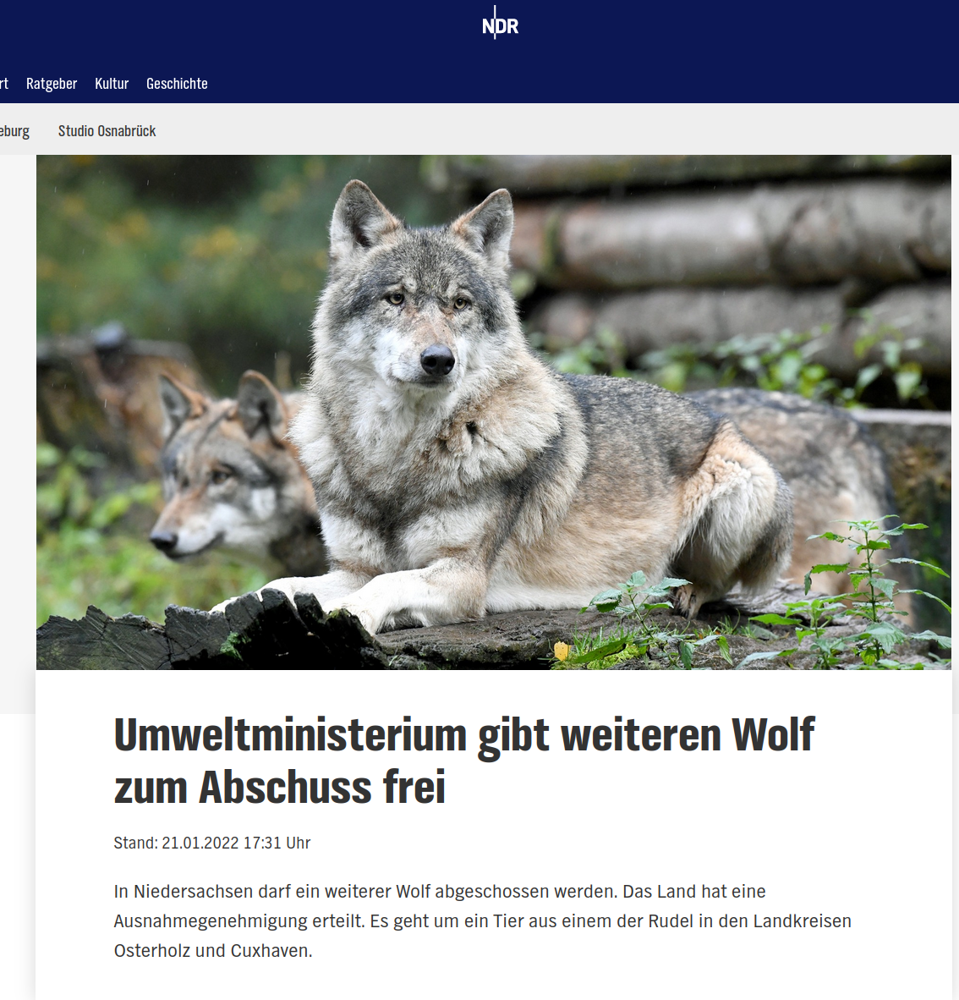
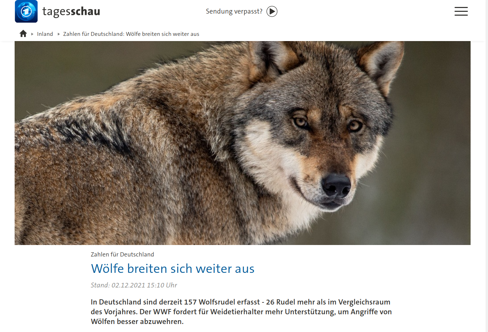
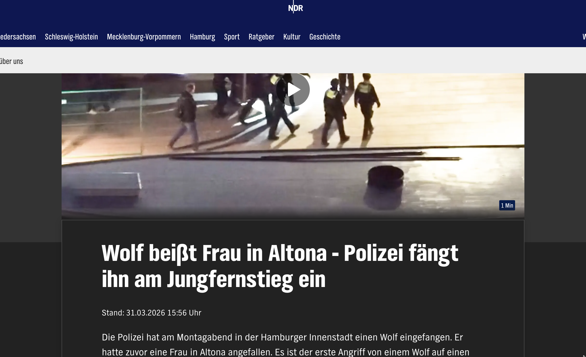
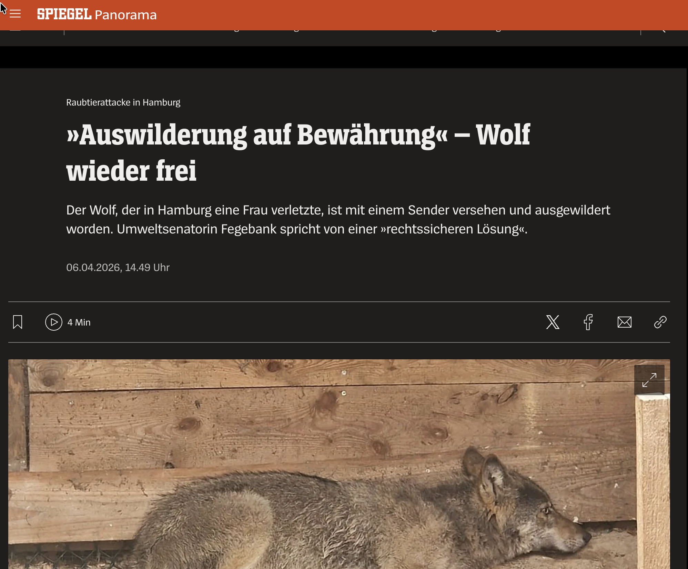
- Konflikte zwischen unterschiedlichen Interessen (Land- und Forstwirtschaft, Naturschutz, Freizeit, …).
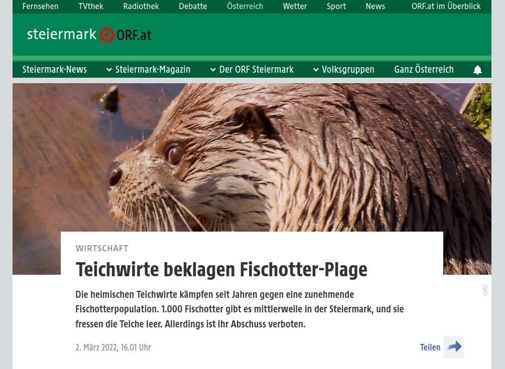
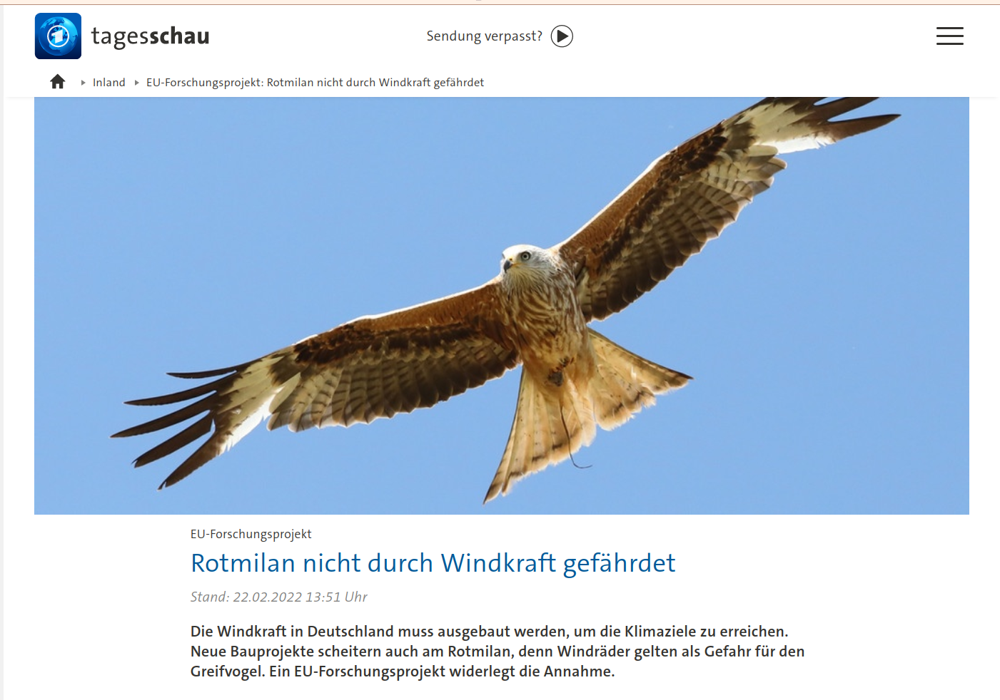
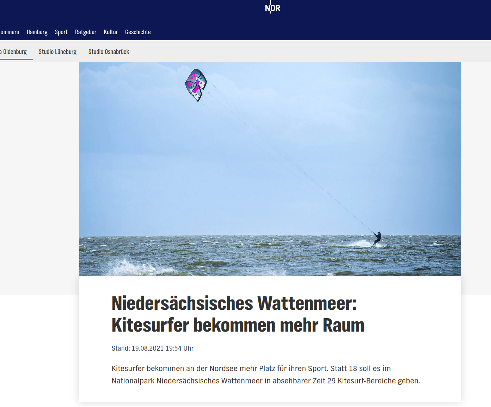
- Wildtiere sind oft nicht das eigentliche Problem.
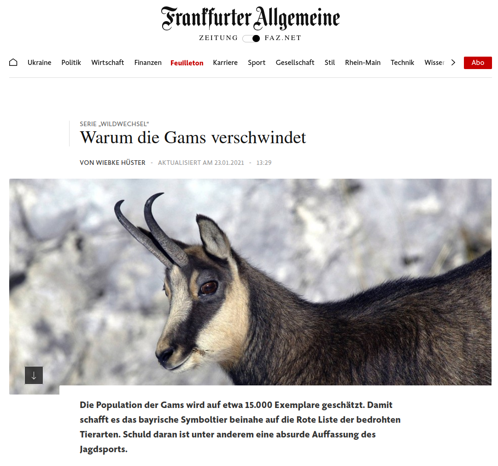
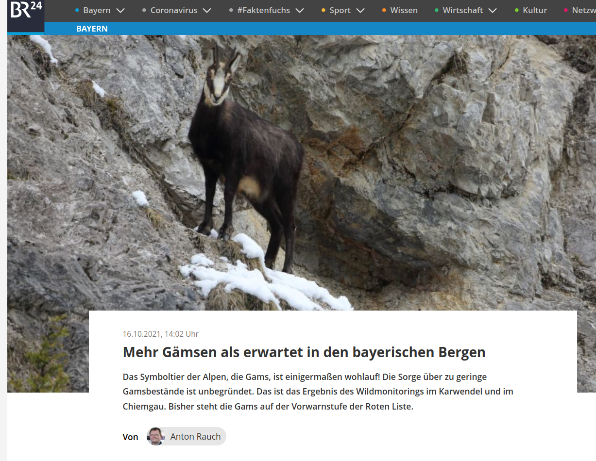
- Verbreitungen von Krankheiten.
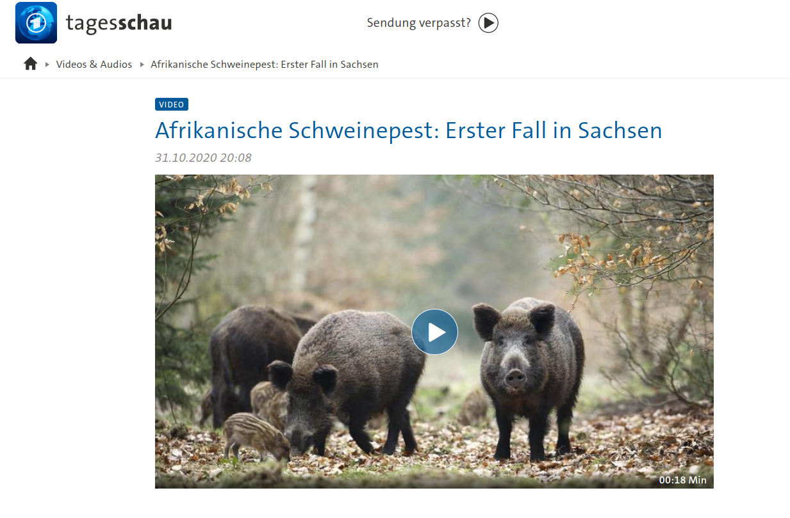
Was ist Monitoring?
Nach Yoccoz et al. 20011, ist Monitoring:
Ein Prozess zum Beobachten von Zustandsvariablen über die Zeit mit dem Ziel den Zustand des Systems zu untersuchen und Inferenz zu betreiben.
- Zustandsvariablen sind Messgrößen, die ein System charakterisieren (z.B. die Abundanz einer Tierart, Biodiviersitätsindeces oder Biomasse, genetische Vielfalt).
- Unter Inferenz versteht man, dass man (statistisch) gesicherte Aussagen über das System machen möchte. Beispiele hierfür sind zu untersuchen, ob bestimmte Kovariate einen Populationstrend beeinflussen oder Vorhersagen für die Zustandsvariable in der Zukunft zu machen.
Am Anfang steht die Planung
- Wieso soll überhaupt ein Monitoring durchgeführt werden?
- Was soll untersucht bzw. aufgenommen werden?
- Wie soll das Monitoring durchgeführt werden?
1. Wieso soll überhaupt ein Monitoring durchgeführt werden?
Ein Monitoring kann unterschiedliche Motivationen haben:
- Beantworten von wissenschaftlichen Fragestellungen. (experimentelle) Ansätze zum Testen von a priori Hypothesen. Z.B. wie wirkt sich Fragmentierung von Wald auf die Artenzahl aus?1
- Management Grundlage: Für ein objektives Management von (Wildtier)population braucht man verlässliche quantitative Grundlagen. Unterschiedliche Monitorings bieten dafür eine Möglichkeit. Dabei sollten anhand der untersuchten Zustandsvariablen (z.B. Dichte, Verbissintensität, etc.) konkrete Managementempfehlungen abgeleitet werden.
2. Was soll untersucht bzw. aufgenommen werden?
Je nach dem Ziel des Monitorings, leiten sich unterschiedliche Zustandsvariablen ab, die untersucht werden. Typische Beispiele sind z.B. Populationsdichte (bzw. -größe), Verbiss, Überlebensraten, Änderung in der Raumnutzung.
3. Wie soll das Monitoring durchgeführt werden?
Bei der konkreten Durchführung eines Monitorings müssen folgende Punkte festgelegt werden:
- Wie oft wird das Monitoring durchgeführt.
- Welche Flächen/Populationen werden ins Monitoring eingeschlossen.
- Wie wird Fehlern begegnet, dass Tiere
- nicht gesehen werden, bzw.
- die Dichte sich räumlich ändert.
Motivation für ein Monitoring
- Forschung
- Wirtschaftliche Interessen
- Rechtliche Rahmenbedingungen (z.B. FFH)
Rechtliche Rahmenbedingungen
# Terminologie
- Internationale Übereinkommen (international conventions)
-
Werden von Staaten geschlossen und müssen durch nationales und/oder EU-Recht umgesetzt werden. Z.B. Berner Konvention
- EU-Richtlinie
-
Gibt den Rahmen vor und muss in nationales Recht umgewandelt werden. Z.B. die FFH-Richtlinie
- EU-Verordnung
-
Gesetzlicher Rahmen wird von der EU vorgegeben und muss nicht mehr in nationales Recht umgewandelt werden. Z.B. Monitoring von Treibhausgasen-Emissionen.
Ramsar-Konvention
Was ist die Ramsar-Konvention?
- Internationales völkerrechtliches Abkommen
- Schutz von Feuchtgebieten von internationaler Bedeutung
- Abgeschlossen 1971 in Ramsar (Iran)
- Über 170 Vertragsstaaten
- Eines der ältesten globalen Naturschutzabkommen
Ziele der Ramsar-Konvention
- Erhaltung von Feuchtgebieten
- Nachhaltige Nutzung („wise use“)
- Schutz von Wasser- und Zugvögeln
- Förderung der internationalen Zusammenarbeit
- Beitrag zu Biodiversitäts-, Wasser- und Klimaschutz
Nachhaltige Nutzung („wise use“)
- Gilt für alle Feuchtgebiete, nicht nur Ramsar-Gebiete
- Nutzung darf Zugvögel und Lebensräume nicht beeinträchtigen
- Integration in Raumplanung, Land- und Wassernutzung
- Erfordert begleitendes ökologisches Monitoring
Monitoring des ökologischen Charakters
- Regelmäßige Beobachtung von Feuchtgebieten
- Wichtige Indikatoren:
- Bestände von Wasser- und Zugvögeln
- Brut- und Rastzahlen
- Zustand der Lebensräume
- Umsetzung durch nationale Programme und internationale Vogelzählungen
Rechtliche Bedeutung und Umsetzung
- Keine direkte Rechtswirkung für Bürger:innen
- Umsetzung über:
- nationales Naturschutzrecht
- EU-Recht (FFH- und Vogelschutzrichtlinie)
- Ramsar-Gebiete oft Teil von Natura 2000
- Referenzabkommen für Umwelt-Monitoring und Naturschutzpolitik
Internationale Zusammenarbeit entlang der Zugrouten
- Kooperation zwischen Staaten entlang von Zugwegen (Flyways)
- Schutz grenzüberschreitender Feuchtgebiete
- Zusammenarbeit mit:
- AEWA
- CMS (Bonner Konvention)
- EU-Vogelschutzrichtlinie
- Grundlage für koordiniertes Zugvogel-Monitoring
Berner Konvention – Überblick & Ziele
- Internationales Übereinkommen zum Naturschutz in Europa
- Verabschiedet 1979 in Bern
- Völkerrechtliches Abkommen des Europarats
- Fokus auf Arten- und Lebensraumschutz
- Erhaltung der biologischen Vielfalt in Europa
- Schutz wildlebender Tier- und Pflanzenarten
Schutzinstrumente der Berner Konvention
- Listen geschützter Arten (Anhänge I–III):
- Anhang I: streng geschützte Pflanzen
- Anhang II: streng geschützte Tiere
- Anhang III: geschützte Tiere (regulierte Nutzung)
- Verbot von:
- absichtlicher Tötung und Fang
- Zerstörung von Fortpflanzungs- und Ruhestätten
- Regulierung von Jagd, Fang und Nutzung
Monitoring, Umsetzung und Bedeutung
- Monitoring von Artenbeständen und Lebensräumen
- Berichtspflichten der Vertragsstaaten
- Ständiger Ausschuss (Standing Committee) überwacht Umsetzung
- Grundlage für EU-Naturschutzrecht:
- Vogelschutzrichtlinie
- FFH-Richtlinie
- Zentrales europäisches Artenschutzabkommen
Vergleich: Berner Konvention vs. Ramsar-Konvention
| Aspekt | Berner Konvention | Ramsar-Konvention |
|---|---|---|
| Rechtsnatur | Internationales Übereinkommen (Europarat) | Internationales Übereinkommen (global) |
| Geografischer Fokus | Europa (plus wenige weitere Staaten) | Weltweit |
| Schutzfokus | Wildlebende Tier- und Pflanzenarten | Feuchtgebiete |
| Bezug zu Zugvögeln | Schutz wandernder Arten durch Art- und Habitatregelungen | Schutz zentraler Rast-, Brut- und Überwinterungsgebiete |
| Monitoring | Monitoring von Artenbeständen und Lebensräumen | Monitoring des ökologischen Charakters von Feuchtgebieten |
| Bedeutung für die EU | Grundlage für FFH- und Vogelschutzrichtlinie | Referenz für Feuchtgebietsschutz, oft Natura-2000-Bezug |
Bonn Konvention
Folie 1: Bonner Konvention (CMS) – Überblick
- Internationales Übereinkommen zum Schutz wandernder Tierarten
- Offizieller Name: „Übereinkommen zur Erhaltung der wandernden wildlebenden Tierarten“
- Verabschiedet 1979 in Bonn
- Völkerrechtliches Abkommen der Vereinten Nationen (UNEP)
- Fokus auf grenzüberschreitenden Artenschutz
Folie 2: Ziele der Bonner Konvention
- Schutz wandernder (migratorischer) Tierarten
- Erhaltung und Wiederherstellung von Lebensräumen
- Sicherung von Zugwegen (Flyways)
- Vermeidung von Gefährdungen entlang der gesamten Wanderroute
- Förderung internationaler Zusammenarbeit zwischen Staaten
Folie 3: Artenschutzinstrumente – Anhänge I und II
- Anhang I (streng geschützt):
- Vom Aussterben bedrohte wandernde Arten
- Verpflichtung zu strengem Schutz
- Verbot von Fang, Tötung und Störung
- Anhang II (Kooperationsarten):
- Arten mit ungünstigem Erhaltungszustand
- Bedarf an international abgestimmten Schutzmaßnahmen
Folie 4: Umsetzungsinstrumente – Abkommen und MoUs
- Spezielle regionale oder taxonomische Abkommen
- Beispiele:
- AEWA (afrikanisch-eurasische Wasservögel)
- EUROBATS (Fledermäuse)
- Inhalte:
- Schutzmaßnahmen
- Monitoring und Forschung
- Datenaustausch und Koordination entlang von Zugrouten
Folie 5: Monitoring, Umsetzung und Bedeutung
- Monitoring von Beständen wandernder Arten
- Regelmäßige nationale Berichte
- Wissenschaftlicher Beirat (Scientific Council)
- Zentrale Rolle im internationalen Zugvogel- und Artenschutz
- Ergänzt Ramsar- und Berner Konvention auf globaler Ebene
UN-Konvention über die biologische Vielfalt
Folie 1: UN-Konvention über die biologische Vielfalt (CBD) – Überblick
- Internationales Übereinkommen zum Schutz der biologischen Vielfalt
- Offizieller Name: „Übereinkommen über die biologische Vielfalt“
- Verabschiedet 1992 auf dem Erdgipfel in Rio de Janeiro
- In Kraft seit 1993
- Nahezu weltweite Mitgliedschaft
- Zentrales globales Abkommen zum Biodiversitätsschutz
Folie 2: Die drei Hauptziele der CBD
- Erhaltung der biologischen Vielfalt
- Nachhaltige Nutzung ihrer Bestandteile
- Gerechte Aufteilung der Vorteile aus der Nutzung genetischer Ressourcen (Access and Benefit-Sharing, ABS)
- Integration von Biodiversität in alle Politikbereiche
Folie 3: Zentrale Instrumente der CBD
- Nationale Biodiversitätsstrategien und Aktionspläne (NBSAPs)
- Schutz von Ökosystemen, Arten und genetischer Vielfalt
- Umweltverträglichkeitsprüfungen (UVP)
- Forschung, Monitoring und Datenaustausch
- Förderung von Bildung, Bewusstsein und Beteiligung
Folie 4: Protokolle und globale Rahmenwerke
- Cartagena-Protokoll (2000):
- Biosicherheit und Umgang mit gentechnisch veränderten Organismen
- Nagoya-Protokoll (2010):
- Zugang zu genetischen Ressourcen
- Gerechter Vorteilsausgleich (ABS)
- Global Biodiversity Framework (Kunming–Montreal, 2022):
- Globale Ziele bis 2030 („30×30“-Ziel)
Folie 5: Umsetzung, Monitoring und Bedeutung
- Nationale Berichte der Vertragsstaaten
- Globale Indikatoren und Zielsysteme
- Wissenschaftliche Unterstützung durch IPBES
- Referenzrahmen für:
- internationale Naturschutzpolitik
- EU-Biodiversitätsstrategie
- nationale Naturschutzgesetze
- Dachkonvention für Ramsar-, Berner- und Bonn-Konvention
CITES
CITES – Washingtoner Artenschutzübereinkommen (1973)
- Internationales Übereinkommen zur Regulierung des Handels mit bedrohten Tier- und Pflanzenarten
- Offizieller Name: Convention on International Trade in Endangered Species of Wild Fauna and Flora
- Ziel: Sicherstellen, dass internationaler Handel das Überleben von Arten nicht gefährdet
- Zentrales Instrument: Artenschutz-Anhänge
- Anhang I: Handel grundsätzlich verboten
- Anhang II: Handel streng reguliert
- Anhang III: Schutz auf Antrag einzelner Staaten
- Starker Vollzugsfokus:
- Genehmigungspflichten
- Kontrollen durch Behörden und Zoll
- Ergänzt Ramsar-, Bonn-, Berner Konvention und CBD im globalen Artenschutz
FFH
Vogelschutzrichtlinie
IUCN
Quellen
Optionale Literatur
- Bennett, G., & Ligthart, S. (2001). The implementation of international nature conservation agreements in Europe: the case of the Netherlands. European Environment, 11(3), 140-150